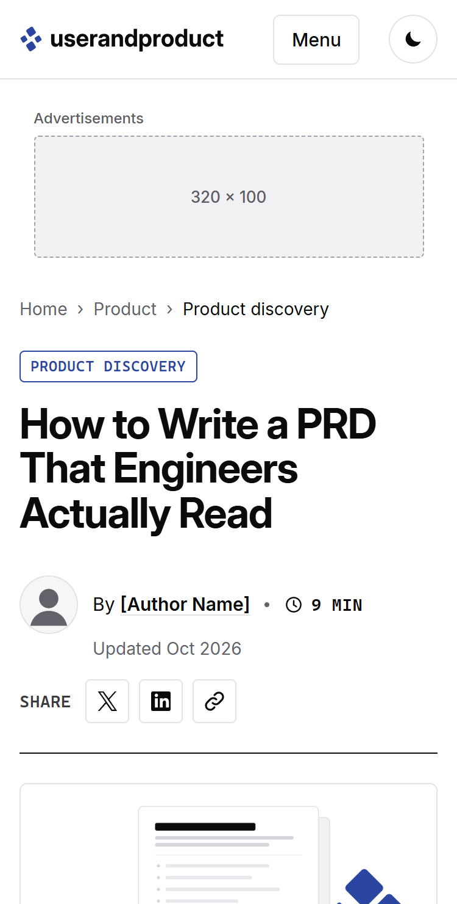
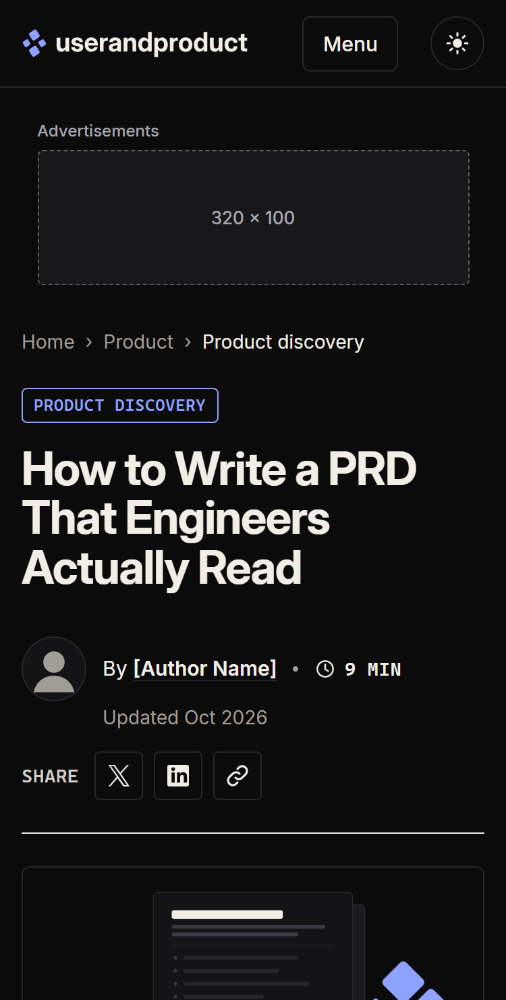
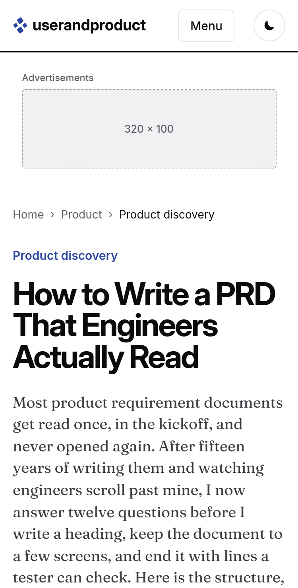
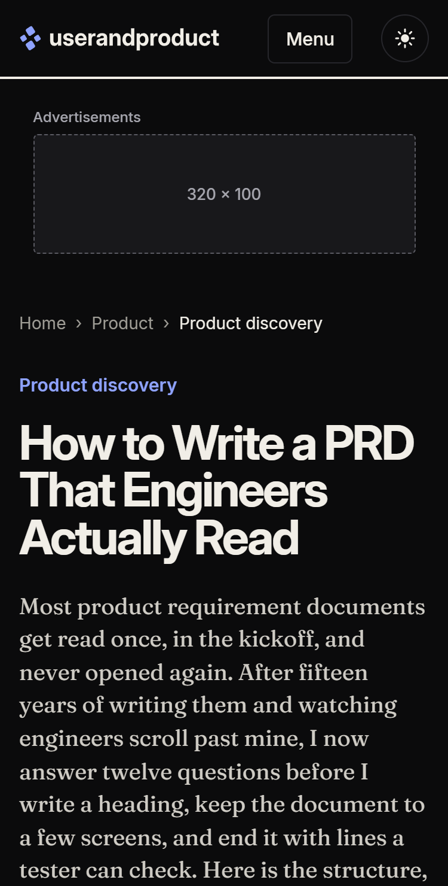
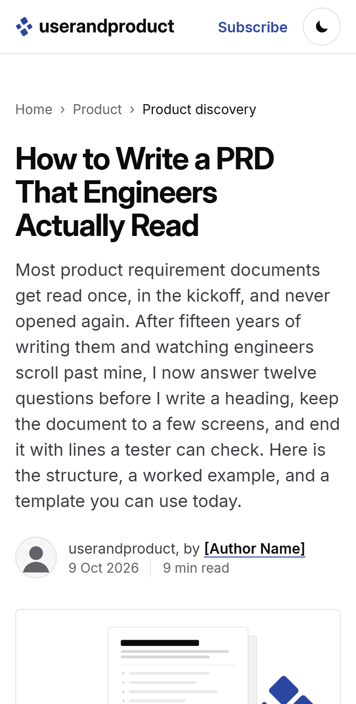
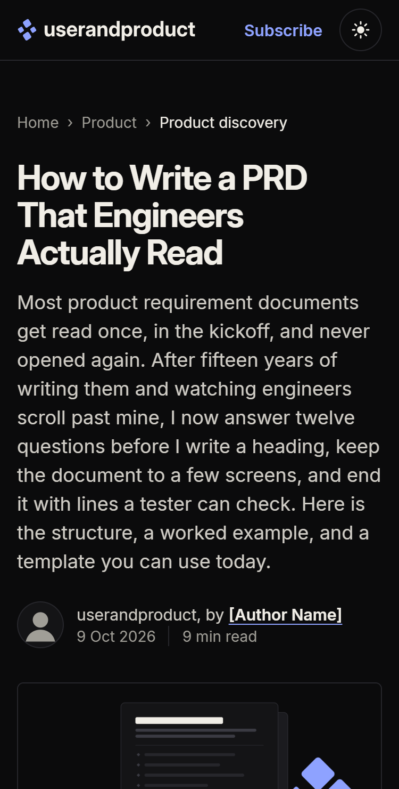

The article page, three ways
Same article in all three: "How to Write a PRD That Engineers Actually Read", about 1,400 words with two figures, a table, a pull quote, the template block with the PRD interview, the author box, related pieces and a one-line newsletter signup. Pick by eye. The 16:9 featured image under the byline (1200×675, light and dark versions, in img/) doubles as the source for the Open Graph image, and the Related cards carry 600×338 thumbnails. Each page has light and dark themes (the moon button), works at phone width, and carries placeholder ad slots that follow the rules listed at the bottom of this page.
-


A. Sidebar
The Tiger Data structure. A full-width top block: breadcrumb, category chip, a 60px headline on two lines, a byline row (48px avatar, author link, read time, "Updated Oct 2026") with Share buttons on the right, then a hairline rule. Below it: a sticky 240px left rail with a Copy link button, tag chips and a numbered table of contents (the section you are reading is highlighted); a 720px centre column (720px at 1280, 1366 and 1440) with the hero image, the body (running text about 71 characters a line); and from 1200px one sticky rail unit, a 160×600 skyscraper up to 1439px and a 300×600 half page from 1440px. Both rails stop where the body ends; after the body the page uses the full container for the template block (three cards in a row), a Related row in the Tiger Data style (a // RELATED label on a hairline rule, three large cards with an illustration thumbnail, tag chips and a 24px title) and the newsletter line. No author box: the byline carries the author. From 1024px a 300×250 sits in the body between the third and fourth H2. On phones the contents fold into a disclosure, two 336×280 units sit between sections, and a collapsible 320×50 anchor shows only while you read the body (demonstration only). Leaderboard under the header; container up to 1360px. Body type: Inter 18px, headings Inter Display Bold.
- Ad units
- 3 from 1200px (leaderboard, rail unit, 300×250 in the body); 2 at 1024 to 1199; 4 at 375 (320×100 leaderboard, 2 in-article, anchor)
- Max in view
- 2 at 1280×720, 1280×800, 1366×768 and 1440×900; 1 at 1100 and 768; 2 at 375
- Mobile density
- 6.2% of the article, 5.8% of the page
-


B. Magazine
The Smashing layout. One centred 760px column with wide margins, an 84px display headline, an inline numbered contents list, figures and the template block out to 1000px, and a pull quote that steps 180px into the left margin. Body type: Fraunces 20px (the 9pt text cut) for the editorial feel, with Inter for UI, tables and the excerpt, and Inter Display Bold headings. Ads: a responsive leaderboard under the header (970×90, 728×90 on tablets, 320×100 on phones) and three 336×280 units after sections 1, 3 and 5.
- Ad units
- 4 (leaderboard + 3 in-article), at every width
- Max in view
- 1 at 1280, 1 at 375
- Mobile density
- 7.3% of the article, 6.9% of the page
-


C. Reader
The Substack layout. A slim top bar (logo, Subscribe, theme), then a 680px centred column and nothing else on the page but the article; running text about 72 characters a line, and the template block widens to 960px on desktop so its three parts sit side by side. Body type: Inter 18px, headings Inter Display Bold. Ads: one 336×280 after the deck and one after section 3, both labelled.
- Ad units
- 2 (after the deck + 1 in-article)
- Max in view
- 1 at 1280, 1 at 375
- Mobile density
- 4.7% of the article, 4.5% of the page
Illustrations
Explainers sit on the eight pastel tints from the Printables site, with its dark dot grid and dark ink; nothing else. One tint per article: every explainer in an article shares it, chosen by publish order like the Printables tiles, so neighbouring articles differ. Related thumbnails use their own article's tint. This article is teal (both figures); its Related cards are yellow, pink and blue. The same PNG goes on the white page and the near-black page. Rules in illustration-rules.md; source in printables-tints.md. The article's hero image (img/hero-prd-light.png) doubles as the source for the Open Graph image.
Open the explainer gallery: twelve diagram types, each on a different background from the curated twelve, each shown on the white page and on the near-black page.
Code blocks
All three pages share one code block component (in mockup.css and mockup.js): a dark card in both themes with three dots, a language label, an optional file name or caption, and a copy button that confirms with "Copied". The card scrolls sideways on narrow screens; the page does not. A small built-in highlighter covers SQL, JavaScript, JSON, Bash and HTML, and other languages show as plain text. Inline code in body text gets a quiet chip. In WordPress this maps to the core code block and inline code through the theme stylesheet and one enqueued script; no plugin needed. The article shows three examples: JSON front matter, the SQL success measure and a Bash one-liner.
Ad rules we follow
Checked on 9 Oct 2026 against Google's publisher policies and the Better Ads Standards. Quotes are from the pages linked under each rule.
- No fixed number of ads per page. Google dropped the old limit of three ad units per page in 2016 (not 2019, as we had noted) and now looks at the balance of content and ads instead. Source: martech.org, Google removes AdSense 3-ads-per-page limit; Search Engine Journal
- Ads never outweigh content.
Advertising and other paid promotional material added to your pages should not exceed publisher-content.
Publisher-content does not includewhitespace, header or footer content, or links to other content on the site
, so we count only the article itself. Source: Google Publisher Policies, More ads or paid promotional material than publisher-content - Ads look like ads. Publishers may not
format ads so that they become indistinguishable from other content on that page
,place misleading labels above Google ad units
, orplace ads in a way that might be mistaken for menu, navigation or download links
. Ads may not sit in a floating box script or in pop-ups. Our slots have a dashed outline, a grey fill and a label, and sit apart from the contents, buttons and template downloads. Source: AdSense Program policies - The label is "Advertisements".
Publishers may only label Google ads with either "Advertisements" or "Sponsored Links".
The slots use "Advertisements" (Google's wording) rather than the singular. Source: AdSense ad placement policies - Better Ads Standards on phones. No pop-ups or prestitials, no ads taking up
more than 30% of the vertical height of the main content portion of the page
, no flashing animated ads, no auto-playing video with sound, no postitials with a countdown, no full-screen scrollovers, and no large sticky ads (a sticky ad thattakes up more than 30% of the screen's real estate
). On desktop: no pop-ups, no auto-playing video with sound, no prestitials with a countdown, no large sticky ads. Source: Google, About mobile ad experiences; Desktop ad experiences; Coalition for Better Ads, the standards - Anchors stay small and out of the way. The one anchor (variant A, phones only) is 320×50 plus its label, about 10% of a 812px screen. It appears only after the first screen, leaves before the template block, collapses with one tap, and the page reserves its height at the bottom so it never hides the end of the article. Google's own anchor units are collapsible and dismissible. Source: AdSense, anchor ads in Auto ads
- Our own rules on top. Never more than three ad units in the viewport at once (variant A now keeps it to two); in-article units only between H2 sections, never two in a row, with at least 400px of content between them (the closest pair here is more than 2,000px apart); every slot reserves its height, so nothing shifts when an ad loads.
How the numbers were measured
Each page was loaded in headless Edge at 1280×800 and 375×812 (and 768 and 1440 for checking), then scrolled top to bottom in 40px steps. At each step we counted the ad slots whose box crosses the viewport and kept the highest count. Mobile density is the summed height of the ad slots, labels included, divided by the height of the article (the Better Ads method), with the share of the whole page height alongside it. No page scrolls sideways at 375px. A second sweep in 20px steps at 1280, 1440 and 375 checks that no sticky or fixed element crosses the template, author, related or newsletter blocks: zero overlaps on all three pages.